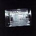

|
|
FACD 2.01
|
Contents:
CD: UK 1994 (Factory Too FACD 2.01) 2:05 Anthony 4:14 The Rest of My Life 6:04 For Colette 6:23 The Next Time 5:27 Beautiful Lies 5:51 My Irascible Friend 2:49 Believe in Me 2:51 Fermina 2:00 Where I Should Be 5:15 Fado 1:42 Madre Mio 5:10 Blue Period
Additional Notes:
There is some evidence to suggest that FAC 2.04 had an original claim to be FAC 2.01. See below.
Came with an Insert (with its own number - FAC 3.01), which was a Survey / Fan-info response card with an offer for a free Vini Reilly plectrum or 'The return of...' print.
FAC 2.02
|
Contents:
2x7": UK 1995 (Factory Too FAC 2.02) * CDS: UK 1995 (Factory Too FACD 2.02) [Gatefold Digipak] CS: UK 1995 (Factory Too FAC 2.02C) [Promo] 3:49 EAST WEST COAST - Bright 4:32 EAST WEST COAST - Rag Doll 5:36 ITALIAN LOVE PARTY - Me and Fate 5:53 ITALIAN LOVE PARTY - Just Like A Guru 2:49 THE ORCH - Official Heat 5:44 THE ORCH - Black Light 3:32 K-TRACK - Disarm 3:35 K-TRACK - Born Again * Issued with sticker set.
Additional Notes:
FAC 2.03
|
Additional Notes:
Black wool with woven 'too' logo in white cotton. 300 made with an accompanying card as Factory's Chistmas 1994 gift.
FAC 2.04
|
Contents:
7": UK 1994 (Factory Too FAC 2.04) [promo] 2:36 Ridiculous Day 2:39 The Bartender ~ "FAC 201 - A -EX" ~ "FAC 201 B-1 EX"
Additional Notes:
Released in clear plastic sleeve.
Live session from John Peel show on BBC Radio 1, first transmitted (from the record?) 15/10/94
It is interesting to note the matrix messages, and the transmission date of the Peel session. Indeed the single was available (ask Frank) before FACD 2.01. This lends weight to any claim that Hopper on Peel was Factory Too's first release.
FAC 2.05
|
Contents:
7": UK 1995 (Factory Too FAC 2.05) 3:05 Wasted 3:35 Double Joy ~ I've Got a Lot of Time For This ~ Don't Talk in the Van CDS: UK 1995 (Factory Too FACD 2.05) 3:05 Wasted 2:09 So Damn Clever 2:46 Dangerous Men 3:35 Double Joy
FACD 2.06
|
Contents:
CD: UK 1995 (Factory Too FACD 2.06) 3:21 BARBARA MANNING - San Diego Zoo 2:20 STEPHEN MERRITT - Aging Spinsters 2:54 MARY TIMONY - All Dressed Up In Dreams 2:54 DEAN WAREHAM - Falling Out Of Love (With You) 2:32 AYAKO AKASHIBA - Winter In July 2:35 ROBERT SCOTT - Heaven In A Black Leather Jacket 2:28 MAC SUPERCHUNK - Dream Hat 4:19 GEORGIA HUBLEY - Movies In My Head 3:42 LOU BARLOW - In The City In The Rain 2:43 AMELIA FLETCHER - Looking For Love (In The Hall Of Mirrors) 2:47 MARK ROBINSON - Puerto Rico Way 3:29 ANNA DOMINO - Here In My Heart 3:27 MITCH EASTER - Pillow Fight 3:16 JEFFREY BORCHARDT - You Can't Break A Broken Heart 2:34 CHRIS KNOX - When I'm Out Of Town
Additional Notes:
All songs written by Stephin Merritt, and performed by the artists listed.
FAC 2.07
|
Additional Notes:
Factory Too's Official World Wide Web Home Page, designed by Terry Egan, formerly at http://www.u-net.com/factory/ but since replaced, although you might find archived versions here. See also FAC 2.37
FAC 2.08
|
Additional Notes:
Details unknown
FAC 2.09
|
Additional Notes:
Poster for the In The City '95 event, featuring Hopper, Vini Reilly, The Space Monkeys, and Khalique. Sunday 3rd September 1995.
"Factory Too Walks On Water. On the Fitzcoraldo: Hopper & The Space Monkeys. On the Princess Catherine: Vini Reilly & Khalique. 7pm"
I assume the Fitzcoraldo & the Princess Catherine are ships...
FACT 2.10
|
Contents:
LP: UK 1996 (Factory Too FACT 2.10) * CS: UK 1996 (Factory Too FACT 2.10C) CD: UK 1996 (Factory Too FACD 2.10) ** 3:39 Bad Kid 4:00 Placebo 2:30 Nice Set Up 4:56 Oh My Heartless 2:26 Cause I Rock 5:36 Someone Phoned 0:18 Germolene 4:07 Ridiculous Day 3:24 4 Good Byes 3:26 Interference 3:28 Homesick 1:48 English And French 2:53 Wasted ** 4:17 Jotown 1:28 [Untitled] *** * Includes lyric sheet and Hopper/Factory Too reply card. ** A re-recorded version from FAC 2.05, produced by Bernard Butler. *** The bonus track (instrumental) on the CD is not credited.
FACDR 2.11
|
Contents:
CDROM: UK 1995 (Factory Too FACDR 2.11) [Mac Format] CDROM: UK 1998 (Factory Too FACDR 2.11W) [PC Format] [129.1 Mb Data (Mac), 126.6 Mb (PC)] 2:05 Anthony 4:14 The Rest of My Life 6:23 The Next Time 5:27 Beautiful Lies 5:51 My Irascible Friend 2:49 Believe in Me 2:51 Fermina 2:00 Where I Should Be 1:42 Madre Mio 5:10 Blue Period
Additional Notes:
"For Colette" & "Fado" are not included, cw2.01, even though they would fit.
Housed in a dark grey sandpaper sleeve.
PC Version available only by mail-order from Factory.
The '11' number (as FAC 3.11) was also allocated to a promotional Durutti Column poster, probably a promo for 2.01 or 2.11. It may also be the giveaway for responding to 3.01 (although I never got mine... bastards.. DR)
FAC 2.12
|
Contents:
7": UK n/a (Factory Too FAC 2.12) * ?:?? Oh My Heartless ?:?? 'Cause I Rock 7": UK 1997 (Factory Too FAC 2.12) 3:49 Oh My Heartless 2:15 Auditorium 6:07 Wasted (The Chopper Squad Mix) CDS: UK n/a (Factory Too FACD 2.12) * ?:?? Oh My Heartless ?:?? 'Cause I Rock CDS: UK 1997 (Factory Too FACD 2.12) 3:49 Oh My Heartless 2:15 Auditorium 2:00 Interference ** 6:07 Wasted (The Chopper Squad Mix) * Originally scheduled in 1996, but never released ** Version different to that found on FACT 2.10
Additional Notes:
Apparently Factory Too/London's last joint release.
The '12' number (as FACT 2.12) was also apparently allocated to a Factory Too showcase held at the Hacienda, Manchester 24th July 95, featuring K-Track, Italian Love Party, The Orch, and East West Coast.
A Factory Too ad in NME July 15 says: "July 24th Fac 2.12 'A Taste of The Label', the Factory sampler live at the Hacienda."
FAC 2.13
|
Contents:
12": UK 1996 (Factory Too FAC 2.13) 4:22 Keep On Tripping On 3:01 Sitting On A Cloud 4:12 Cream Judge And The Clown (Guitared Up To Fuck Mix) ~ Argos The Coquestador! ~ Argos Strikes Back! 12": UK 1996 (Factory Too FACDJ 2.13) [white label promo] 7:46 Trippin' On (Where's Johnny Mix) ?:?? Creamed Up ~ Horace Goes Skiing CDS: UK 1996 (Factory Too FACD 2.13) 4:22 Keep On Tripping On 3:01 Sitting On A Cloud 4:12 Cream Judge And The Clown (Guitared Up To Fuck Mix) 7:46 Trippin' On (Where's Johnny Mix)
FAC 2.14
|
Additional Notes:
The Bag. "Soft black leathery-plastic ruck sack with XXXL straps".
The first 130 had their straps snap shortly after manufacturing, the final run of 40 were OK, "and now rare".
FAC 2.15
|
Contents:
CS: US n/a (Factory Too FACTUS 2.15) CDS: US n/a (Factory Too FACDUS 2.15) ?:?? Paper Cup Sailboats ?:?? Melody Man ?:?? Tramp of Hearts ?:?? Basically ?:?? Factory Boy ?:?? Dreamcatcher
Additional Notes:
US-only release planned for 1997 due to 'licencing problems' (source: the keyboardist from the band according to Rob Kyffin). May never be released.
Do promos exist?
FAC 2.16
|
Additional Notes:
"A recording of Obsessions created by the obsessed themselves", as first reported on the Factory website v1.
Details unknown, apparently a Web-based "Fred Vermorel" thing.
FAC 2.17
|
FAC 2.18
|
FAC 2.19
|
Contents:
VHS: UK 1997 (Factory Too FAC 2.19)
??:?? {Stuff}
Additional Notes:
Features Tony Wilson going on about Manchester bands loving black American music. Also features the Space Monkeys going on about their influences.
Made to introduce the band to Interscope.
FACT 2.20
|
Additional Notes:
The Factory website v1 originally mentioned this number as the Space Monkeys 'Daddy' release, which was released as 2.25
Possibly allocated to the "Too Young To Know..." compilation. Click here for more information.
FAC 2.21
|
Contents:
CD: UK 1998 (Factory Too / London 558 330-2) 6:19 Organ Donor 3:18 Pigeon 4:15 I B Yours 7:48 Twenty Trees 7:55 Abuse 3:23 Drinking Song 7:40 Sing To Me 2:28 My Last Kiss 6:04 For Rachel 7:33 Highfield Choir 1:41 Epilogue
Additional Notes:
Apparently a Factory Too promotional cassette issue exists. More details required.
Factory's number allocated was 2.21 - doesn't appear on the release.
FAC 2.22
|
Contents:
7": UK 1996 (Factory Too FAC 2.22) * CDS: UK 1996 (Factory Too FACD 2.22) ** 3:43 Bad Kid 3:14 Cheap Jack * With lyrics sheet and reply card insert ** With reply card insert
FAC 2.23
|
Contents:
VHS: UK 1996 (Factory Too FAC 2.23)
40:00 {Stuff}
Additional Notes:
Video made on the day of the 'Monkeys signing to Factory Too.
"Adventures in the tower of the Refuge Building in Manchester; starring the lawyers."
Official release / usage status unknown.

|
FAC 2.24
|
Contents:
CDS: UK 1996 (Factory Too FACD 2.24) 8:09 SPACE MONKEYS: Awaiting Mr Crow
Additional Notes:
20 page Xmas card designed by Ed Templeton, including one track promo single as mentioned.
FACT 2.25
|
Contents:
CS: UK 1997 (Factory Too FACT 2.25) [Promo] *
2xLP: UK 1997 (Factory Too FACT 2.25) **
CD: UK 1997 (Factory Too FACD 2.25) ***
3:52 Acid House Killed Rock and Roll
3:49 Blowing Down the Stylus
3:22 Sugarcane
3:14 Inside Your Soul
6:14 Ready For the Rampage
4:07 Dear Dhinus
4:41 Cream Judge and the Clown *
4:54 Smile America **/***
3:41 Let It Shine
3:13 We Are the Supercool
6:42 Sweetest Dream
8:05 March of the Scarecrow
?:?? (Awaiting Mr Crow) ***
*** The CD contains "Awaiting Mr Crow" as a hidden extra - 6 minutes into
track 66 (i.e "666"). There are 97 tracks in all, most of which are
blank a la Stone Roses' "Second Coming". Tracks 12-65 and 67-97 are
empty (4 seconds each).
*** Rereleased in May 1998 with the cover changed to that of the
US release. The graffiti image of Martin Luther King had to be
withdrawn in the US due to all images belonging to the family of
Martin Luther King. Although the change was only required in the US,
Factory decided to make the change to all versions of the album.
Additional Notes:
The Factory web page v1 originally suggested that 2.25 was to be a release by Khalique titled 'Asian Man', featuring a track 'Sids Tune'. Apparently completed, but yet to be released.
FAC 2.26
|
Additional Notes:
Relates to the Unofficial Durutti Column website, mailing list and donated Audio tracks available from the website maintained by Robert Stanzel.
FAC 2.27
|
FAC 2.28
|
Additional Notes:
A blue enamel label badge with an 'F' on it in silver, surrounded by a silver circle, and the catalogue number Fac2.28 on the reverse side.
Possibly the 1997 Christmas gift.
FACT 2.29
|
Contents:
CD: UK 1998 (Factory Too FAC 2.29) [promo] ?:?? Brave New World ?:?? Chilled Milk ?:?? Soul Buddha ?:?? Speeding In The Chillout Room ?:?? All the March Hares ?:?? California ?:?? Naked Spur ?:?? Call It a Bird
Additional Notes:
Promo only cassette of new songs.
FAC 2.30
|
FAC 2.31
|
FAC 2.32
|
Contents:
7": UK 1996 (Factory Too FAC 2.32) 3:26 Ridiculous Day 4:24 E.S.P. CDS: UK 1996 (Factory Too FACD 2.32) 3:26 Ridiculous Day 4:24 E.S.P. 5:04 Weeping Mary
FAC 2.33
|
Contents:
12": UK 1996 (Factory Too FAC 2.33) 3:52 Blowing Down The Stylus 4:06 Dear Dhinus 3:39 King Monkey 5:39 Def By Stylus (D.O.S.E Remix) CDS: UK 1996 (Factory Too FACD 2.33) * 3:52 Blowing Down The Stylus 4:06 Dear Dhinus 4:26 King Monkey 4:42 Fantasy Island CS: UK 1996 (Factory Too FAC 2.33C) ** 3:52 Blowing Down The Stylus 4:06 Dear Dhinus * Tracks 3 & 4 are listed in the wrong order on the cover. ** Released in a Can...
FAC 2.34
|
Additional Notes:
A small translucent case (approx 3"x3" and the width of a CD jewel box), stamped 'FAC 2.34' in gold on the cover, and with a paper insert printed with 'www.factoryrecords.com'.
Possibly the 1998 Christmas gift.
FAC 2.35
|
Additional Notes:
Catalogue number seen on poster at Picadilly Records in Manchester for preview of FACD 2.60 held on 24/5/99.
FAC 2.36
|
FAC 2.37
|
Additional Notes:
Factory's official World Wide Web Home Page at http://www.factoryrecords.com. Not updated for years, although you might find archived versions here.
FAC 2.38
|
FAC 2.39
|

|
FACT 2.40
|
Contents:
CD: UK 1997 (London / Factory Once FACT 2.40) 3:34 OMD - Electricity * 3:14 A CERTAIN RATIO - All Night Party 3:21 THE DISTRACTIONS - Time Goes By So Slow 5:38 CRAWLING CHAOS - Sex Machine 3:35 THE NAMES - Night Shift 6:08 JOY DIVISION - Decades 2:56 STOCKHOLM MONSTERS - Fairy Tales 5:30 NEW ORDER - Everything's Gone Green 7:28 CABARET VOLTAIRE - Yashar 4:36 KALIMA - The Smiling Hour 5:36 RED TURNS TO... - Deep Sleep 4:23 QUANDO QUANGO - Bad Blood 5:05 KARL DENVER - Wimoweh 4:02 HAPPY MONDAYS - Donovan 2:48 DURUTTI COLUMN - Love No More * Version produced by Paul Collister and OMD, not Martin Hannett.
Additional Notes:
Interesting to note a Too number allocated to a Once release.
FACDR 2.41
|
Contents:
2xCD: UK 1998 (Factory Too FACDR 2.41) [CDR promo] [CD One] 6:19 Organ Donor 3:18 Pigeon 4:15 I B Yours 7:48 Twenty Trees 7:55 Abuse 3:23 Drinking Song 7:40 Sing To Me 2:28 My Last Kiss 6:04 For Rachel 7:33 Highfield Choir 1:41 Epilogue [CD Two] * 3:59 Amigos Em Portugal 3:21 Menina Ao Pe Duma Piscina 4:10 Lisboa 2:58 Sara E Tristana 2:55 Estoril A Noite 4:49 Favourite Descending Intervals 1:24 To End With 3:38 All That Love And Maths Can Do 3:30 The Sea Wall 4:15 Our Lady Of The Angels 4:00 White Rabbit 6:49 Catos Con Guantes ** 6:07 The Together Mix 5:06 Fridays (Up Person Mix) 7:25 Kiss Of Def *** (the proposed Rough Trade 7" track - FB) * "Experiments by Vini" on the CDR label ** Actually "When the World (Newson Mix)" *** The proposed Rough Trade 7" track
Additional Notes:
Limited edition double CDR promo featuring "Time Was Gigantic... When We Were Kids" together with "Reissued Experiments", a selection of some of the rare and previously unreleased material issued as extra tracks on the second phase of Durutti Column reissues.
Only 25 copies issued, signed, hand numbered and assembled by Vini himself.
FAC 2.42
|
FAC 2.43
|
Contents:
7": UK 1997 (Factory Too FAC 2.43/7) [white label promo]
3:56 Acid House Killed Rock and Roll
2:25 Crash and Burn
12": UK 1997 (Factory Too FAC 2.43)
3:56 Acid House Killed Rock and Roll
?:?? Chopper Squad Killed Rock and Roll
?:?? Dub Pistols Killed Acid House
12": UK 1997 (Factory Too FACDJ 2.43) [white label promo]
?:?? Dub Pistols Killed Acid House
?:?? Chopper Squad Killed Rock and Roll
?:?? Dub Pistols Punk as Fuck
CD: UK 1997 (Factory Too FACD 2.43)
CD: UK 1997 (Factory Too FACD 3.43) *
3:56 Acid House Killed Rock and Roll
2:25 Crash and Burn
17:54 Dub Pistols Killed Acid House /
(Awaiting Mr Crow) **
* Mentioned on the Factory home page v1. Numbering needs clarification.
** Actually two tracks: 'Dub Pistols...' up to 5:54, then untitled hidden
track ('Awaiting Mr Crow'?) from 9:48 to end.
FAC 2.44 - 2.52
|
FAC 2.53
|
Contents:
7": UK 1997 (Factory FAC 2.53/7) *
?:?? Sugar Cane
?:?? Silver Aeroplane
~ MOONRAKER ... RIP ... END OF AN ERA
12": UK 1997 (Factory FAC 2.53)
?:?? Sugar Cane (US Remix)
?:?? Sugar Cane (The Man From Atlantis Mix)
?:?? Sugar Cane (Chopper Squad Rock Cocaine Mix)
~ MOONRAKER ... RIP ... END OF AN ERA
CDS: UK 1997 (Factory FACD 2.53)
3:25 Sugar Cane
5:07 Sugar Cane (Chopper Squad Rock Cocaine Mix)
3:40 Sugar Cane (Zugang Vs. The Rhythm - C'Est La Guerre Mix)
3:24 Sugar Cane (Pure Shine Vocal Mix)
5:58 Sugar Cane (The Man From Atlantis Mix)
CDS: UK 1998 (Factory FACDR 2.53)
3:25 Sugar Cane (US Remix)
4:30 Pin Up Boy
3:12 Obeying the Master
5:26 Sugar Cane (The Mark 1 (And Only) Reconstruction)
* Matrix states FACS 253
Additional Notes:
FAC 2.54 - 2.59
|

|
FACD 2.60
|
Contents:
CD: UK 1999 (NMC FACD 2.60) LP: UK 1999 (NMC FACT 2.60) ?:?? Incubation ?:?? Wilderness ?:?? Twenty Four Hours ?:?? The Eternal ?:?? Heart & Soul ?:?? Shadowplay ?:?? Transmission ?:?? Disorder ?:?? Warsaw ?:?? Colony ?:?? Interzone ?:?? She's Lost Control
Additional Notes:
Not a Factory release as such, but NMC used the approved FAC numbering.
Recording of the live performance.
FACD 2.61
|
Contents:
CD: UK 2001 (NMC Music FACD 2.61) 2xLP: UK 2001 (NMC Music FACT 2.61) 3:21 Disorder 3:17 Love Will Tear Us APart 3:25 Insight 3:46 Shadowplay 3:19 Transmission 4:39 Day Of The Lords 4:12 24 Hours 3:42 These Days 4:17 A Means to an End 2:18 Passover 4:40 New Dawn Fades 6:56 Atrocity Exhibition 3:39 Digital 4:46 Dead Souls 4:13 Autosuggestion 4:47 Atmosphere
Additional Notes:
Not a Factory release as such, but NMC used the approved FAC numbering.
Tracks 1-9 recorded Paris 18 Dec 1979, 10-12 recorded Amsterdam 11 Jan 1980, 13-16 recorded Eindhoven 18 Jan 1980.
The booklet also includes the original poster art for the "Les Bain Douches" show.
NMC was originally going to issue a special metallic box edition. A 'Fractured Box' limited edition was released which also contained FACD 2.60.
FAC 2.62
|
FACD 2.63
|
Contents:
CDS: UK 1997 (Factory FACD 2.63) [promo] * CDS: UK 1998 (Factory FACD 2.63) 6:32 March of the Scarecrows (Original Mix) 4:26 March of the Scarecrows (Jersey St Crew Mix) 6:07 March of the Scarecrows (Refugee From Atlantis Mix) 4:15 March of the Scarecrows (Jersey St Crew Dub Mix) * Cover and CD marked "A cult object. Not really for sale"
Additional Notes:
Subsequent limited (1000) general re-release with a slightly different cover
HAPPY MONDAYS: Loads
|
Contents:
CD: UK 1996 (Factory Once / London 520 036-2) CD: UK 1996 (Factory Once / London 520 343-2) * [Disc One] 5:20 Step On 6:13 W.F.L. 4:18 Kinky Afro 2:42 Hallelujah (MacColl Mix) 4:39 Mad Cyril 2:47 Lazyitis 4:21 Tokoloshe Man 5:08 Loose Fit 5:10 Bob's Yer Uncle 4:01 Judge Fudge 4:20 Stinkin Thinkin' 4:50 Sunshine & Love 5:52 Angel 4:23 Tart Tart 3:06 Kuff Dam 4:38 24 Hour Party People [Disc Two] * 3:54 Lazyitis (One Armed Boxer Mix) 7:15 W.F.L (Think About The Future Perfecto 12" Mix) 6:22 Bob's Yer Uncle (Perfecto 12" Mix) ** 5:59 Loose Fix (Perfecto 12" Mix) 7:55 Hallelujah (Deadstock Mix) 3:46 Freaky Dancin' 3:40 Delightful * Initial copies packaged as a double CD with "Loads More" bonus remix CD. Matrix number of 1st CD is same as cat# for normal release. Matrix number of 2nd CD is 850 029-2. ** Originally titled "Bob's Yer Tune". Perfecto references are also new.
DURUTTI COLUMN: The Return Of The Durutti Column
|
Contents:
CD: UK 1996 (Factory Once FACDO 14 / London 828 829-2) 3:01 Sketch For Summer 5:08 Requiem For A Father 5:30 Katharine 5:02 Conduct 1:39 In "D" 1:38 Jazz 2:24 Sketch For Winter 2:23 Collette 2:25 Sketch For Winter 3:49 Lips That Would Kiss * 3:04 Madeleine * 3:42 1st Aspect Of The Same Thing ** 2:59 2nd Aspect Of The Same Thing ** 1:49 Sleep Will Come *** 3:35 Experiment In Fifth **** * From Lips That Would Kiss - BL: Factory Benelux FBN 2 ** From Martin Hannett's Testcard: Factory FACT 14C *** From From Brussels With Love compilation - BL: Crepuscule TWI 007 **** From The Fruit of the Original Sin - BL: Crepuscule TWI 035
Additional Notes:
All other tracks from original Factory FACD 14 release
Several label listing errors.
DURUTTI COLUMN: LC
|
Contents:
CD: UK 1996 (Factory Once FACDO 44 / London 828 827-2) 5:14 Sketch for Dawn 1 3:29 Portrait for Frazer 2:16 Jacqueline 2:30 Messidor 4:34 Sketch for Dawn 2 6:47 Never Known 5:03 The Act Committed 1:57 Detail for Paul 6:36 The Missing Boy 2:49 The Sweet Cheat Gone 4:35 For Mimi * 5:24 Belgian Friends * 4:41 Self Portrait * 4:26 One Christmas For Your Thoughts ** 3:39 Danny *** 3:01 Enigma *** * From FACT 24 ** From Ghosts of Christmas Past / Remake compilation - BL: Crepuscule TWI 058/158/658 *** From Enigma - FR: Sordide Sentimental SS 45005
Additional Notes:
All other tracks from original Factory FACD 44 release
"LC" is an abbreviation for the Italian anarchist slogan "La Lotta Continua" meaning "the struggle continues".
"Messidor" is the tenth month of the French Revolutionary calendar
"The Missing Boy" refers to Ian Curtis
"The Sweet Cheat Gone" is the published English title for the "Albertine disparue" volume of Marcel Proust's
DURUTTI COLUMN: The Guitar and Other Machines
|
Contents:
CD: UK 1996 (Factory Once FACDO 204 / London 828 828-2) 4:03 Arpeggiator 3:47 What Is It to Me (Woman) 3:13 Red Shoes 2:41 Jongleur Grey 3:13 When the World 2:22 U.S.P. 5:50 Bordeaux Sequence 3:08 Pol in B 4:48 English Landscape Tradition 5:14 Miss Haymes 1:42 Don't Think You're Funny 6:25 LFO Mod * 3:00 Dream Topping 4:57 28 Oldham Place 5:32 Otis ** 3:20 English Landscape Tradition ** 5:15 Finding the sea ** 6:06 Bordeaux ** * From Valuable Passages - UK: Factory FACD 164 ** From Live at Womad 1988 - UK: Factory FACD 234
Additional Notes:
All other tracks from original Factory FACD 204 release
DURUTTI COLUMN: Vini Reilly
|
Contents:
CD: UK 1996 (Factory Once FACDO 244 / London 828 826-2) 2:47 Love No More 2:59 Pol in G 2:13 Opera I 4:59 People's Pleasure Park 3:12 Red Square 9:48 Finding the Sea 4:17 Otis 2:15 William B 3:57 They Work Every Day 2:58 Opera II 2:04 Homage to Catalonia 4:04 Requiem Again 3:01 My Country 2:15 Paradise Passage Road * 2:42 Les Preger's Tune ** 3:02 Buddhist Prayer *** 2:29 Misere *** 2:43 Real Drums - Real Drummer *** 2:18 Pathway *** 4:02 Rob Grey's Elegy *** 2:29 Shirt No. 7 *** * From Dry - IT: Materiali Sonori MASO CD 90024 ** From Red Shoes - IT: Materiali Sonori MASO CD 90037 *** From Sporadic Recordings - UK: Spore CD 1
Additional Notes:
All other tracks from original Factory FACD 244 release
DURUTTI COLUMN: Another Setting
|
Contents:
CD: UK 1998 (Factory Once FACDO 74 / London 556 041-2) 3:24 Prayer 1:30 Response 3:30 Bordeaux 2:48 For A Western 4:55 The Beggar 3:01 Francesca 5:03 Smile In The Crowd 4:41 You've Heard It Before 5:22 Dream Of A Child 2:38 Second Family 4:25 Spent Time 3:59 Friends In Portugal * 3:21 Small Girl By A Pool * 4:10 Lisbon * 2:58 Sara and Tristana * 2:55 Nighttime Estoril * 4:49 Favourite Descending Intervals * 1:24 To End With * * From "Amigos em Portugal", remastered from vinyl
Additional Notes:
All other tracks from original Factory FACD 74 release
Tracks specified incorrectly
DURUTTI COLUMN: Without Mercy
|
Contents:
CD: UK 1998 (Factory Once FACDO 84 / London 556 039-2) 18:46 Without Mercy I 19:35 Without Mercy II 1:50 Goodbye 6:00 The Room 3:37 Little Mercy 7:44 Silence 4:35 E.E. 1:05 Hello 3:38 All That Love And Maths Can Do * 3:30 The Sea Wall ** * From FBN 51 ** From Hommage a Duras compilation on Interior Music
Additional Notes:
All other tracks from original Factory FACD 84 release
DURUTTI COLUMN: Domo Arigato
|
Contents:
CD: UK 1998 (Factory Once FACDO 144 / London 556 038-2) **
2:22 Sketch for Summer
4:50 Sketch for Dawn
2:16 Mercy Theme
10:04 Little Mercy
5:35 Jacqueline *
6:37 Dream of a Child
3:45 Mercy Dance
4:40 The Room
4:09 E.E.
8:12 Blind Elevator Girl
2:50 Tomorrow
3:04 For Belgian Friends
7:45 Missing Boy
2:51 Self Portrait
0:54 {audience noise} *
4:15 Our Lady Of The Angels **/***
4:00 White Rabbit **/***
6:49 When The World (Newson Mix) **/****
*** From FAC 184
**** From FACD 194
Additional Notes:
All other tracks from original Factory FACD 144 release
Live in Tokyo, Japan.
DURUTTI COLUMN: Obey The Time
|
Contents:
CD: UK 1998 (Factory Once FACDO 274 / London 556 040-2) 1:02 Vino Della Casa Bianco 5:17 Hotel Of The Lake 1990 4:10 Fridays 5:39 Home 3:33 Art And Freight 4:59 Spanish Reggae 6:31 Neon 6:51 The Warmest Rain 4:09 Contra-indications 1:36 Vino Della Casa Rosso 6:07 The Together Mix * 5:06 Fridays (Up-Person Mix) * 7:25 Kiss Of Def ** * From FAC 284 ** Previously unreleased
Additional Notes:
All other tracks from original Factory FACD 274 release
|  |
VARIOUS: Too Young To Know, Too Wild To Care (The Factory Story Pt. 1)
|
Contents:
CD: UK 1997 (London 828 700-2) 4:45 JOY DIVISION - New Dawn Fades 5:23 DURUTTI COLUMN - For Belgian Friends 2:37 A CERTAIN RATIO - And Then Again 5:13 NEW ORDER - Age Of Consent 6:24 THE WAKE - Talk About The Past 4:56 RAILWAY CHILDREN - Brighter 2:56 JAMES - Hymn From A Village ?:?? ABECEDARIANS - Smiling Monarchs 5:27 MARCEL KING - Reach Out For Love 4:38 SECTION 25 - Looking From A Hilltop 6:24 QUANDO QUANGO - Genius 7:11 HAPPY MONDAYS - WFL (Think About The Future mix) 6:27 NORTHSIDE - My Rising Star 4:14 CATH CARROLL - Moves Like You 5:16 ELECTRONIC - Getting Away With It
Additional Notes:
Possibly allocated the Fac number FACT 2.20, as seen on an old incarnation of the Factory Too website.